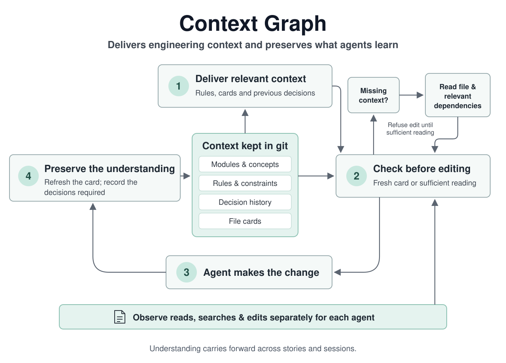

What happens on every edit
- Has the agent understood the file? Either the file's card is up to date, or the agent read the whole file this session, along with the files it depends on. If the change affects code that uses this file, the agent must have looked at that too. If not, the edit is refused, with a list of what to read and why.
- The edit, with the file's card, the rules that apply to it, and past decisions on it and on the files it depends on.
- A note afterwards. The agent updates the file's card, and records a short decision for any file that follows a rule: what changed and why.

What it keeps
A small set of files in a .ctx/ folder, committed with your code, so the whole team and every agent sees the same thing: the parts of your project and which folders belong to each, the rules each part follows, the decisions made with who made them and why, and a card per file. A card is marked out of date as soon as its file changes. To start, /context-graph:init builds all of this from your folders, tests and docs, without asking you anything, and from then on it runs in the background. When an agent spots a convention the code follows, it adds it as guidance that every agent sees from then on. Only a rule that would block edits needs a person to sign it off.
What you see
- A side panel that follows the file an agent is working on: its card, its rules, past decisions and the files around it.
/graph <file>opens it on any file. - Suggestions, with the evidence for each, waiting quietly for whenever you want to look. Nothing above your prompt asks you about them.
- A background writer that writes missing cards while you work. In an existing codebase it starts on its own, with the code changed in the last three months, beginning with the files everything else depends on.
- A curator (off unless you turn it on) that reads past decisions and adds the rules they keep pointing to as guidance, and flags rules agents keep working around.
/whyanswers a question about the code from these records alone, beside the conversation, citing each record it used.- A map of the project's parts, with their rules and how many files have a card.
With code-kit
The two plugins work on their own and recognise each other when both are installed. A file's card then also says which requirement it delivers and which agent owns it, so the agent sees those limits before it starts. code-kit shows, for each agent, the files it changed without reading. Pausing code-kit's automatic loop pauses Context Graph's background writer and curator too.
Commands
| /context-graph:next | Looks at the repository and does the next step. |
| /context-graph:init | Switches it on: builds the graph and starts it in the background, with no questions. |
| /graph · /why | Opens the side panel; asks a question about the code. |
| ctx card <file> --text "…" | Writes or updates a file's card. |
| ctx why <file> | The decisions and rules on a file. |
| ctx gate --base origin/main | On a pull request: out-of-date cards, unapproved rules, conflicting decisions. |
| ctx doctor | Checks the plugin is working, and says what's missing if not. |
When to use it
When your code follows rules it doesn't state anywhere, when "why is it like this?" only has an answer in someone's head, when several agents or sessions work on the same code, or when you want to see how carefully an agent worked. It costs something: reading first and writing cards took about two and a half times the time and tokens in our benchmark. For a quick script, leave it switched off.